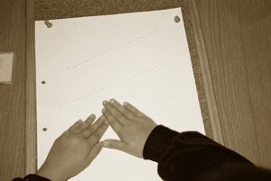

Częstym problemem początkujących użytkowników brajla jest wzrokowa percepcja wypukłych znaków brajlowskich. Dużą trudność sprawia przede wszystkim wzrokowe rozróżnianie bezbarwnych, wypukłych punktów w znaku brajlowskim. Nierzadkim błędem popełnianym przez widzące osoby rozpoczynające naukę brajla jest interpretacja sąsiadujących ze sobą punktów z dwóch znajdujących się obok siebie znaków, jako jeden znak. Jest to jednak kwestia wprawy i nie należy się zniechęcać początkowymi trudnościami w odczytywaniu liter brajlowskich.
NAJEDŹ MYSZKĄ i SPRAWDŹ ODPOWIEDŹ
Przegląd studiów nad percepcją dotykową niewidomych i widzących należy zacząć od procesów elementarnych. Okazuje się, że dotyk rozróżnia z pewnością punkty odległe o 2,5 mm oraz próg pobudliwości dotykowej nie różni się u niewidomych i widzących. Różnice występują jedynie przy zdolności rozróżniania dwóch punktów, gdzie wchodzi w grę codzienna praktyka różnicowania i integracji spostrzeżeń dotykowych, czyli innymi słowy ćwiczenie i rozwijanie percepcji dotykowej. Spostrzeganie dotykowe jest rozłożone w czasie, czyli stopniowe i nierównoczesne, podczas gdy wzrokiem możemy ujmować w tym samym czasie, równocześnie i symultanicznie dużą liczbę elementów.
Co warto wiedzieć o nauczaniu i uczeniu się pisma Braille'a:
- Nauczanie czytania i pisania liter brajlowskich, zwłaszcza u niewidomych dzieci, należy poprzedzić ćwiczeniami rozwijającymi: orientację w schemacie własnego ciała, orientację w małej i dużej przestrzeni oraz percepcję dotykową.
-
W Polsce dostępny jest program rozwijający percepcję dotykową składający się z: podręcznika dla nauczyciela (w czarnym druku) i podręcznika z lekcjami dla ucznia (w brajlu): Sally S. Mangold "MANGOLD - Rozwojowy Program Percepcji Dotykowej i Rozpoznawania Liter Brajlowskich", Warszawa 2000 (do nabycia w Dziale Zbytu Zakładu Nagrań i Wydawnictw Związku Niewidomych, Sp. z o.o., ul. Konwiktorska 7/9, 00-216 Warszawa, tel. (022) 831-35-24.

- Kolejność wprowadzania liter brajlowskich jest różna od kolejności wprowadzania liter czarnodrukowych u dzieci widzących. Metodyka nauczania brajla powinna być oparta na naukowym ustaleniu kolejności wprowadzania znaków, zarówno w procesie czytania, jak i pisania. Znacznie wcześniej powinny być wprowadzane znaki i pewne połączenia znaków, które są łatwiej percepowane przez czytających.
-
Zasada wprowadzania znaków brajlowskich jest następująca: jako pierwsze wprowadzane są znaki zawierające punkty lewej i górnej części sześciopunktu i równocześnie te, które składają się z jednego, dwóch lub trzech punktów. Jeden z elementarzy dla dzieci niewidomych opracowany przez J. Kamińskę, B. Pierzchałę, B. Regułę "Mój elementarz" Kraków 1996, zgodnie z powyższą zasadą proponuje następującą kolejność wprowadzania liter brajlowskich:
a,  l,
l,  b,
b,  k,
k,  c,
c, 
później litery: o, u, d, e, s, t, itd. UWAGA! Zarówno u dorosłych osób ociemniałych jak i młodzieży, która rozpoczynając naukę brajla, potrafi czytać i pisać pismem czarnodrukowym, nie jest konieczne stosowanie powyższej kolejności, a jedynie zgodnie z sekwencją alfabetyczną.
- Zasada stopniowania trudności. Wprowadzając dziecku pojęcie sześciopunktu, a więc zapoznając go z układem punktów w sześciopunkcie brajlowskim (pozycja, numery punktów), warto zacząć od powiększonego sześciopunktu. Doskonale nadają się do tego kostki brajlowskie lub wytłaczanki do jajek z sześcioma wgłębieniami oraz kule, np. z plasteliny. Wprowadzając konkretną literę brajlowską należy unikać powiększonego wzoru litery, ponieważ zmusza się małe palce dziecka do wykonywania dodatkowych ruchów, potrzebnych do identyfikacji wszystkich powiększonych punktów w znaku.
- Należy zwrócić uwagę na różne umiejętności, których opanowanie pozwoli na biegłe i poprawne czytanie ze zrozumieniem, np.: poziom percepcji dotykowej, sposób pracy rąk i przesuwania palców, pozycja ciała podczas czytania itp. Pomocny w pracy z niewidomym jest "Kwestionariusz oceny umiejętności związanych z czytaniem pisma Braille'a" Witczak - Nowotna J., Paplińska M. Niepełnosprawność i Rehabilitacja nr 3, Instytut Rozwoju Służb Społecznych, Warszawa 2003.
-
Dobierając narzędzia do nauki pisania pismem Braille'a należy kierować się indywidualnymi potrzebami i możliwościami początkującego użytkownika brajla. Stosunkowo łatwym narzędziem do nauki pisania brajlem jest maszyna brajlowska i od niej warto zaczynać nauczanie dzieci. Jeśli osoba (dziecko, czy dorosły) nie ma większych trudności w orientacji i rozumieniu pojęć przestrzennych można rozpocząć naukę pisania na tabliczce brajlowskiej, ale po opanowaniu podstawowych zasad zapisu na maszynie. U osób ze zwiększonymi potrzebami i/lub niepełnosprawnością sprzężoną, mechaniczna lub elektroniczna maszyna brajlowska wydaje się być najlepszym narzędziem do pisania brajlem.


- Brajl czarnodrukowy nie powinien być stosowany jako samodzielna metoda nauki pisma punktowego, a jedynie jako metoda wspierająca.
Gdzie i w jaki sposób nauczyć się brajla:
- W Akademii Pedagogiki Specjalnej w Warszawie na kierunku: Pedagogika Specjalna, specjalność: Tyflopedagogika na studiach dziennych i zaocznych oprócz opanowania Technik brajlowskich i Metodyki nauczania technik brajlowskich, studenci uzyskują wiedzę teoretyczną i umiejętności praktyczne niezbędne w pracy z osobami niewidomymi i słabo widzącymi, również z dodatkowymi niesprawnościami.
- Samodzielnie, korzystając z broszur wydawanych przez Polski Związek Niewidomych.